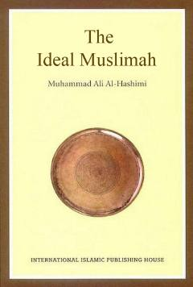

TIIslomda musulmon ayolning shaxsiyati va uning jamiyatdagi o'rni haqida qo'llanma.
Ushbu kitob Qur'on va Sunnat asosida haqiqiy musulmon ayolning shaxsiyati, uning Alloh, ota-ona, turmush o'rtoq va jamiyat oldidagi burchlarini yoritib beradi. Muallif zamonaviy dunyoda yashayotgan musulmon ayollarning o'z diniga sodiq qolishi, oilaviy va ijtimoiy munosabatlarni to'g'ri yo'lga qo'yishi uchun muhim ko'rsatmalarni taqdim etadi. Asar Islom dinida ayol zotiga berilgan yuksak ehtirom va huquqlarni ochib beradi.